Transact-SQl
SQL
SQL (sigle de Structured Query Language, en français langage de requête structurée) est un langage informatique normalisé servant à exploiter des bases de données relationnelles. La partie langage de manipulation des données de SQL permet de rechercher, d'ajouter, de modifier ou de supprimer des données dans les bases de données relationnelles.
DUMP SQL
Un DUMP SQL est un type de fichier optenu par export dans lequel se trouvent les instructions relatives à la création d'une base de donnés.
CRUD
CRUD (create, read, update, delete) (créer, lire, mettre à jour, supprimer) est un acronyme pour les façons dont on peut fonctionner sur des données stockées. C'est un moyen mnémotechnique pour les quatre fonctions de base du stockage persistant.
REQUETE
Une requete est une instruction qui permet de gérer les données de la base de données.
STRUCTURE DE REQUETE
Une requete se structure dans un ordre précis:
- COMMANDE
- JOINTURE
- CONDITION
- GROUPEMENT
- TRI
CREATE
CREATE est la commande qui permet de creer des elements de structure de base de données comme des tables ou des bases de données.
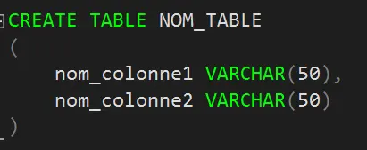SELECT
SELECT (READ) est la commande qui permet d'afficher des données dans une base de données.
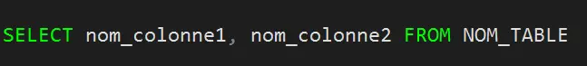UPDATE
UPDATE est la commande qui permet de modifier des données dans une base de données.
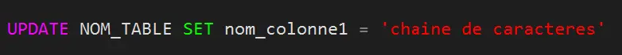DELETE
DELETE est la commande qui permet de supprimer des données dans une base de données.
FONCTION D'AGREGATION
Une fonction d'agrégation est une operation dans une requete permettant de calculer un resultat sur les données d'une colonne en fonction de parametres definis. Il en existe plusieurs, comme SUM() (calcul de somme), AVG() (calcul de moyennes), COUNT() (calcule le nombre de lignes).
CONDITION (WHERE)
La condition est utilisée pour filtrer les resultats de requete. Dans cet exemple elle permet de selectionner des informations relatives a un vehicule en fonction de sa plaque d'immatriculation.
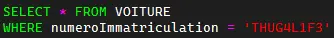GROUP BY()
Pour repertorier les resultats d'une colonne en fonction d'une autre, il faut utiliser GROUP BY(). Par exemple, ici, on souhaite connaitre le nombre d'immeubles enregistrés par quartier:
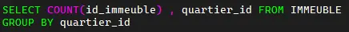HAVING
HAVING est une clause utilisée en SQL pour filtrer les résultats d'une requête agrégée. Elle s'utilise après la clause GROUP BY pour filtrer les groupes en fonction d'une condition spécifiée. Par exemple, vous pouvez utiliser HAVING pour retourner seulement les groupes où la somme dépasse une certaine valeur.
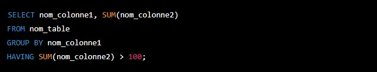Dans cet exemple, la clause "HAVING" est utilisée pour filtrer les résultats d'une requête agrégée en fonction de la somme des valeurs dans la colonne "nom_colonne2". La requête retourne seulement les lignes où la somme des valeurs dans "nom_colonne2" est supérieure à 100.
ORDER BY()
ORDER BY() permet d'assurer un tri en fonction des valeurs d'une colonne.
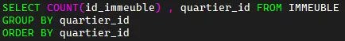ALIAS
Un alias est un nom alternatif utilisé pour un élément de la base de données.
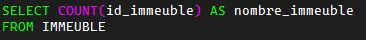JOINTURE
Une jointure sert à relier deux tables entre elles. Pour réaliser une jointure, on utilise une valeur de donnée commune aux deux tables.
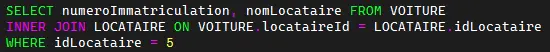REQUETE IMBRIQUEE
Une requete imbriquée, comme son nom l'indique, est une requete imbriquée dans une autre. On peut l'utiliser pour definir une condition par exemple:
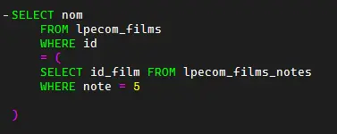Ou encore, comme ici, pour selectionner les 3 premiers elements d'une table parmis les 4 premiers (en d'autres termes, les 3 elements qui suivent le premier):
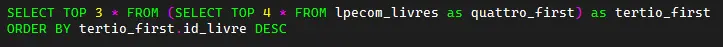Dans le cadre d'une condition, on utilisera '=' pour un resultat unique, et IN pour une liste de résultats.
>Il ne peut y avoir qu'une colonne selectionnée dans une requete imbriquée.
UNION
La commande UNION permet de combiner les résultats de deux ou plusieurs requêtes SELECT distinctes pour retourner un ensemble de résultat unique. Elle enlève les doublons des résultatas combinés.
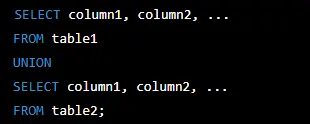TESTS DE REQUETES
La commande 'BEGIN TRANSACTION' permet de demarrer un phase de test. Après avoir effectué la requete, il suffit d'executer 'COMMIT' pour valider la requete, 'ROLLBACK' pour l'annuler.
Il faut IMPERATIVEMENT sortir de Test par le biais de 'COMMIT' ou 'ROLLBACK' car les accès à la base de données sont altérés.
DISTINCT
DISTINCT est une clause utilisée dans les requêtes SQL pour éliminer les enregistrements en double dans les résultats de la requête. Exemple :
L'utilisation de DISTINCT dans une fonction d'agrégation peut être utilisée pour retourner un ensemble unique de valeurs à partir des lignes de la table qui correspondent à la requête. Par exemple :
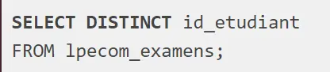AUTO INCREMENT
L'auto-incrémentation (ou identité) en SQL est une fonctionnalité utilisée pour générer automatiquement des valeurs uniques pour une colonne d'une table dans une base de données. Cela permet d'assurer que chaque enregistrement a une valeur unique pour cette colonne, sans avoir à la spécifier manuellement. L'auto-incrémentation est souvent utilisée pour les clés primaires pour garantir l'unicité des enregistrements.
Variable SQL
En SQL, une variable est un espace de stockage temporaire qui peut contenir une valeur ou un objet de données. Les variables sont utilisées pour stocker des valeurs qui peuvent être référencées et utilisées dans une requête SQL ou une procédure stockée. Les variables peuvent être déclarées avec un nom, un type de données et une valeur par défaut, et leur valeur peut être modifiée en cours d'exécution. Les variables peuvent être utilisées pour stocker des résultats intermédiaires de calculs, des valeurs de paramètres, des résultats de requêtes, des valeurs d'entrée utilisateur, et plus encore. Les variables SQL sont spécifiques à la session et ne sont pas partagées entre les sessions de connexion à la base de données.
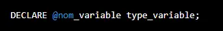Dans cet exemple, la procédure stockée sélectionne les colonnes "colonne1", "colonne2" et "colonne3" depuis la table "nom_table", en utilisant une clause WHERE pour filtrer les résultats. La condition dans la clause WHERE utilise les variables d'entrée "@nom_variable1" et "@nom_variable2" pour effectuer le filtrage. Notez que les types de données des variables d'entrée doivent correspondre aux types de données des colonnes de la table que vous filtrez.
Procédure Stockée
Une procédure stockée (ou "stored procedure" en anglais) est une procédure qui est pré-compilée, stockée et prête à être exécutée dans une base de données. Elle est utilisée pour effectuer des tâches récurrentes ou complexes dans une base de données (requêtes), et peut accepter des paramètres en entrée et retourner des résultats en sortie. Elles sont essentiellement utilisées dans le cadre de tests unitaires, et peuvent etre composées de variables.
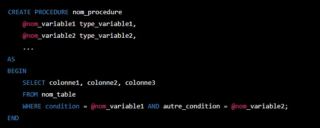Dans cet exemple, la procédure stockée sélectionne les colonnes "colonne1", "colonne2" et "colonne3" depuis la table "nom_table", en utilisant une clause WHERE pour filtrer les résultats. La condition dans la clause WHERE utilise les variables d'entrée "@nom_variable1" et "@nom_variable2" pour effectuer le filtrage. Notez que les types de données des variables d'entrée doivent correspondre aux types de données des colonnes de la table que vous filtrez.
Unicode
Unicode est un système de codage de caractères qui permet de représenter des caractères provenant de différentes langues et écritures dans un même jeu de caractères. En T-SQL, les données Unicode sont représentées par les types de données de chaîne de caractères 'nchar', 'nvarchar', 'ntext' et 'xml'.
Pour exécuter une procédure stockée en utilisant une variable contenant une chaîne de caractères Unicode, vous pouvez utiliser le préfixe 'N' devant la chaîne de caractères pour indiquer que la chaîne est Unicode. Voici un exemple :
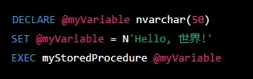Dans cet exemple, la variable @myVariable est déclarée comme une chaîne de caractères Unicode nvarchar et est initialisée avec la chaîne de caractères "Hello, 世界!". Lorsque la procédure stockée myStoredProcedure est exécutée avec la variable @myVariable, la chaîne de caractères Unicode est transmise à la procédure stockée.
Index
Un Index est une suite d'information qui permet de les retrouver de manière efficace.
Il permet d'accélérer une recherche et d'augmenter son efficacité.
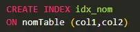